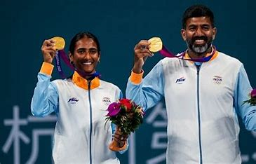
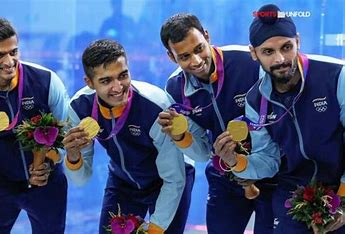
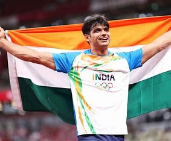

India grabed the MEDALS



India's Asian Games 2023 medal tally is 86 medals - 21 gold, 32 silver and 33 bronze. Know all Indian medal winners in Hangzhou and get medal table live updates.
A 655-member Indian contingent is competing at the Asian Games 2023 in Hangzhou, the People’s Republic of China.
The 19th edition of the continental multisport event officially began on September 23 and will conclude on October 8.
The ongoing edition of the quadrennial meet was originally scheduled for 2022 but was postponed by a year due to COVID-19.The boxing team, spearheaded by world champion Nikhat Zareen and Olympic medallist Lovlina Borgohain, and the wrestling team, featuring Olympic medallist Bajrang Punia and Antim Panghal, are also strong medal contenders.
As on Thursday, 5 October, India have won 86 medals at the Asian Games 2023, 21 gold, 32 silver and 33 bronze.
China lead the overall Asian Games 2023 medals tally with 179 gold, ahead of Japan (44) and the Republic of Korea (33).